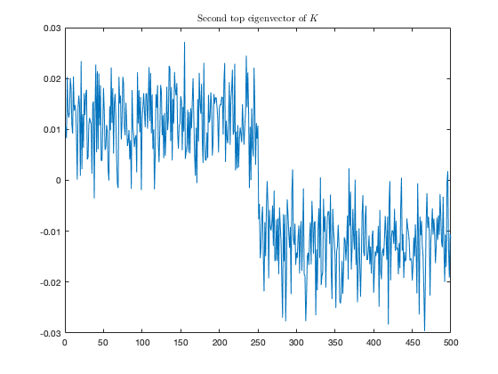
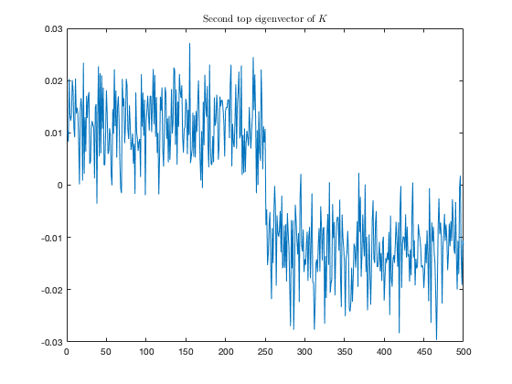

Chapter 8: Discussions on Universality and Practical Applications.
This page contains simulations in Chapter 1 and 8.
Contents
Gaussian kernel matrices of small and large dimensional GAUSSIAN data
close all; clear; clc; n = 5000; cs = [1/2, 1/2]; ns = n*cs; k = length(cs); % nb of classes J = [ones(ns(1),1); -ones(ns(2),1)]; p = 250; % data dimension means = @(i) (-1)^(i)*[2;zeros(p-1,1)]; covs = @(i) eye(p); W=zeros(p,n); for i=1:k W(:,sum(cs(1:(i-1)))*n+1:sum(cs(1:i))*n)=sqrtm(covs(i))*randn(p,cs(i)*n); end X=zeros(p,n); for i=1:k X(:,sum(cs(1:(i-1)))*n+1:sum(cs(1:i))*n)=W(:,sum(cs(1:(i-1)))*n+1:sum(cs(1:i))*n)+means(i)*ones(1,cs(i)*n); end XX=X'*X; d=diag(XX); K=exp(-(-2*XX+d*ones(1,n)+ones(n,1)*d')/2/p); [V_K,~] = eigs(K,3); figure colormap gray; imshow(K,'border','tight','initialmagnification','fit'); axis normal; axis off; index = 1:10:n; eig_vec = V_K(:,2); if eig_vec'*J<0 eig_vec = -eig_vec; end eig_vec = eig_vec(index); figure plot(eig_vec); title('Second top eigenvector of $K$','Interpreter', 'latex')
 
 Gaussian kernel matrices of real-world data
close all; clear; clc; n = 5000; cs = [1/2, 1/2]; ns = n*cs; k = length(cs); % nb of classes J = [ones(ns(1),1); -ones(ns(2),1)]; testcase = 'MNIST'; % among 'MNIST', 'Fashion-MNIST', 'CIFAR', 'Word2Vec' switch testcase case 'MNIST' init_data = loadMNISTImages('../../datasets/MNIST/train-images-idx3-ubyte'); init_labels = loadMNISTLabels('../../datasets/MNIST/train-labels-idx1-ubyte'); selected_labels=[8 9]; case 'Fashion-MNIST' init_data = loadMNISTImages('../../datasets/fashion-MNIST/train-images-idx3-ubyte'); init_labels = loadMNISTLabels('../../datasets/fashion-MNIST/train-labels-idx1-ubyte'); selected_labels=[5 7]; case 'CIFAR' load ../../datasets/CIFAR_VGG.mat init_data = double(CIFAR_feature); init_labels = double(labels); %W = randn(p,p_init); %W = sqrtm(W*W')\W; %% Random projection %selected_images = W*[airplane(:,1:n/2) bird(:,1:n/2)]; selected_labels=[1 3]; end [labels,idx_init_labels]=sort(init_labels,'ascend'); images=init_data(:,idx_init_labels); init_n=length(images(1,:)); p=length(images(:,1)); mean_images=mean(images,2); norm2_images=0; for i=1:init_n norm2_images=norm2_images+1/init_n*norm(images(:,i)-mean_images)^2; end images=(images-mean_images*ones(1,size(images,2)))/sqrt(norm2_images)*sqrt(p); selected_images=[]; MNIST = cell(length(selected_labels),1); j=1; for i=selected_labels selected_images=[selected_images images(:,labels==i)]; MNIST{j}=images(:,labels==i); j=j+1; end mean_selected_images=mean(selected_images,2); norm2_selected_images=mean(sum(abs(selected_images-mean_selected_images*ones(1,length(selected_images))).^2)); for j=1:length(selected_labels) MNIST{j}=(MNIST{j}-mean_selected_images*ones(1,size(MNIST{j},2)))/sqrt(norm2_selected_images)*sqrt(p); end X=zeros(p,n); for i=1:k data = MNIST{i}(:,randperm(size(MNIST{i},2))); X(:,sum(ns(1:(i-1)))+1:sum(ns(1:i)))=data(:,1:ns(i)); end XX=X'*X; d=diag(XX); K=exp(-(-2*XX+d*ones(1,n)+ones(n,1)*d')/2/p); [V_K, D_K] = eigs(K,3); figure colormap gray; imshow(K,'border','tight','initialmagnification','fit'); axis normal; axis off; index = 1:10:n; eig_vec = V_K(:,2); if eig_vec'*J<0 eig_vec = -eig_vec; end eig_vec = eig_vec(index); figure plot(eig_vec); title('Second top eigenvector of $K$','Interpreter', 'latex')


MNIST images versus Gaussian vectors with the same statistics
close all; clear; clc; init_data = loadMNISTImages('../../datasets/MNIST/train-images-idx3-ubyte'); init_labels = loadMNISTLabels('../../datasets/MNIST/train-labels-idx1-ubyte'); selected_labels=[1 2]; [labels,idx_init_labels]=sort(init_labels,'ascend'); images=init_data(:,idx_init_labels); init_n=length(images(1,:)); p=length(images(:,1)); % mean_images=mean(images,2); % norm2_images=0; % for i=1:init_n % norm2_images=norm2_images+1/init_n*norm(images(:,i)-mean_images)^2; % end % images=(images-mean_images*ones(1,size(images,2)))/sqrt(norm2_images)*sqrt(p); selected_images=[]; MNIST = cell(length(selected_labels),1); j=1; for i=selected_labels selected_images=[selected_images images(:,labels==i)]; MNIST{j}=images(:,labels==i); j=j+1; end means = @(i) mean(MNIST{i},2); covs = @(i) 1/length(MNIST{i})*(MNIST{i}*MNIST{i}')-means(i)*means(i)'; class_1_image = MNIST{1}; class_1_image = reshape(class_1_image(:,1),sqrt(p),sqrt(p)); class_2_image = MNIST{2}; class_2_image = reshape(class_2_image(:,1),sqrt(p),sqrt(p)); z = randn(p,1); class_1_gauss = reshape(real(means(1)+(covs(1)^(1/2))*z),sqrt(p),sqrt(p)); class_2_gauss = reshape(real(means(2)+(covs(2)^(1/2))*z),sqrt(p),sqrt(p)); figure colormap gray; subplot(2,2,1); imshow(class_1_image,'border','tight','initialmagnification','fit'); axis normal; axis off; subplot(2,2,2); imshow(class_1_gauss,'border','tight','initialmagnification','fit'); axis normal; axis off; subplot(2,2,3); imshow(class_2_image,'border','tight','initialmagnification','fit'); axis normal; axis off; subplot(2,2,4); imshow(class_2_gauss,'border','tight','initialmagnification','fit'); axis normal; axis off;